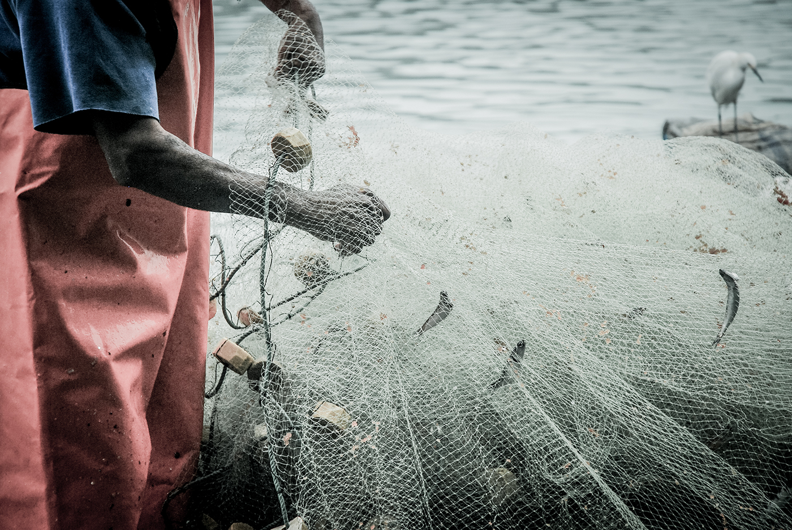
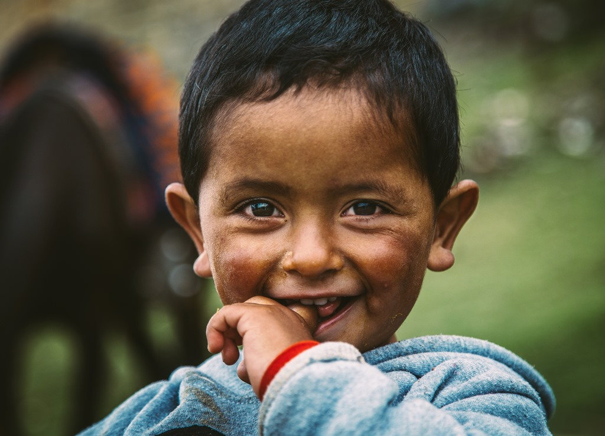
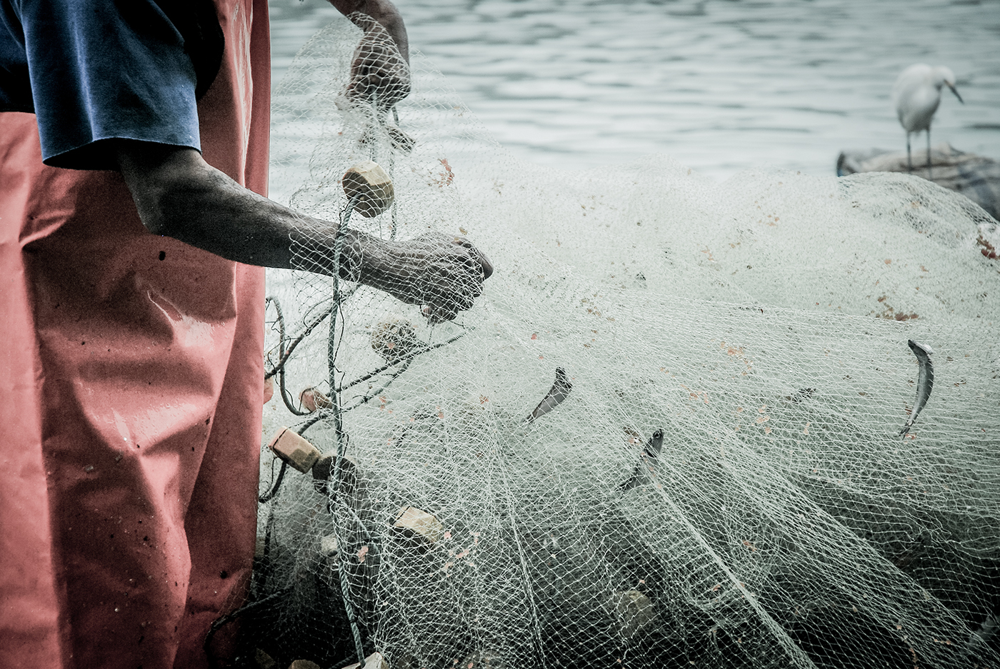
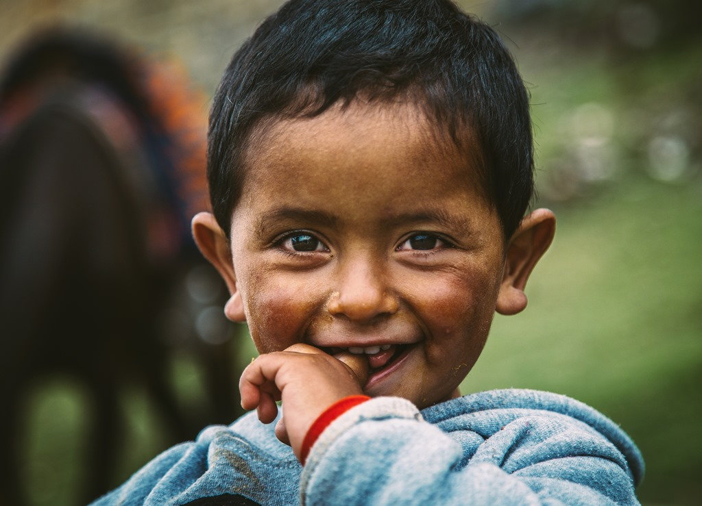

Fotografías que nos trasladan a aquellos momentos especiales con el cual despertamos sentimientos de afecto o nostalgia. Un lugar, una persona o tan solo una cosa pueden hacer que nuestra mente de un largo paseo por el baúl de los recuerdos.
Hola, soy Sandra y luego de dar mil vueltas por la vida y gracias a la orientación de algunas personas termine por lares fantásticos y llenos de misterio. Fui atrapada por la magia del cine, de la imagen fija y en movimiento, ahora es mi pasión y no puedo salir de ella..
- - observar, grabar, cortar, congelar, escuchar.. son los elementos que componen un buen día en mi vida..
- - Movimiento .
- - Pase Amigo, Hay Colores. Tenemos tallas.
 


